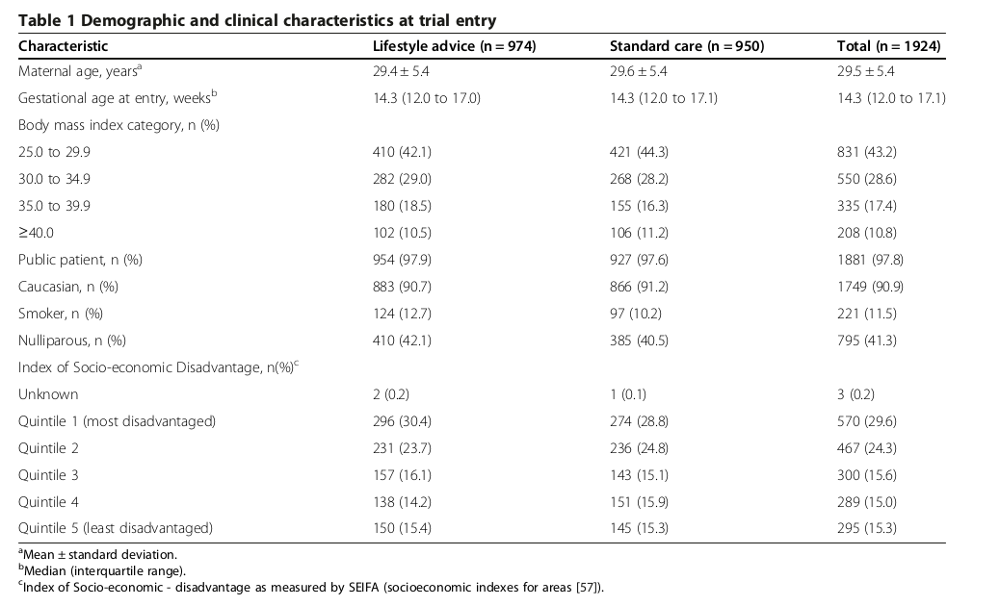

<?xml version="1.0" encoding="UTF-8"?>
<table title="table1" id="table1" class="tabcontent" xmlns="http://www.w3.org/1999/xhtml">
 <tr>
  <td>
   
   <p>target/pdftable1/10.1186_s12916-014-0161-y/tables/table1/table.png</p>
  </td>
  <td>
   <table class="table">
    <caption/>
    <tr>
     <th class="cell">Characteristic Maternal age, years^{a} </th>
     <th class="cell">Lifestyle advice (n = 974) 29.4 ± 5.4 </th>
     <th class="cell">Standard care (n = 950) 29.6 ± 5.4 </th>
     <th class="cell">Total (n = 1924) 29.5 ± 5.4 </th>
    </tr>
    <tr>
     <td class="cell">Gestational age at entry, weeks^{b}</td>
     <td class="cell">14.3 (12.0 to 17.0)</td>
     <td class="cell">14.3 (12.0 to 17.1)</td>
     <td class="cell">14.3 (12.0 to 17.1)</td>
    </tr>
    <tr>
     <td class="cell">Body mass index category, n (%)</td>
     <td class="empty"/>
     <td class="empty"/>
     <td class="empty"/>
    </tr>
    <tr>
     <td class="cell">25.0 to 29.9</td>
     <td class="cell">410 (42.1)</td>
     <td class="cell">421 (44.3)</td>
     <td class="cell">831 (43.2)</td>
    </tr>
    <tr>
     <td class="cell">30.0 to 34.9</td>
     <td class="cell">282 (29.0)</td>
     <td class="cell">268 (28.2)</td>
     <td class="cell">550 (28.6)</td>
    </tr>
    <tr>
     <td class="cell">35.0 to 39.9</td>
     <td class="cell">180 (18.5)</td>
     <td class="cell">155 (16.3)</td>
     <td class="cell">335 (17.4)</td>
    </tr>
    <tr>
     <td class="cell">≥40.0</td>
     <td class="cell">102 (10.5)</td>
     <td class="cell">106 (11.2)</td>
     <td class="cell">208 (10.8)</td>
    </tr>
    <tr>
     <td class="cell">Public patient, n (%)</td>
     <td class="cell">954 (97.9)</td>
     <td class="cell">927 (97.6)</td>
     <td class="cell">1881 (97.8)</td>
    </tr>
    <tr>
     <td class="cell">Caucasian, n (%)</td>
     <td class="cell">883 (90.7)</td>
     <td class="cell">866 (91.2)</td>
     <td class="cell">1749 (90.9)</td>
    </tr>
    <tr>
     <td class="cell">Smoker, n (%)</td>
     <td class="cell">124 (12.7)</td>
     <td class="cell">97 (10.2)</td>
     <td class="cell">221 (11.5)</td>
    </tr>
    <tr>
     <td class="cell">Nulliparous, n (%)</td>
     <td class="cell">410 (42.1)</td>
     <td class="cell">385 (40.5)</td>
     <td class="cell">795 (41.3)</td>
    </tr>
    <tr>
     <td class="cell">Index of Socio-economic Disadvantage, n(%)^{c}</td>
     <td class="empty"/>
     <td class="empty"/>
     <td class="empty"/>
    </tr>
    <tr>
     <td class="cell">Unknown</td>
     <td class="cell">2 (0.2)</td>
     <td class="cell">1 (0.1)</td>
     <td class="cell">3 (0.2)</td>
    </tr>
    <tr>
     <td class="cell">Quintile 1 (most disadvantaged)</td>
     <td class="cell">296 (30.4)</td>
     <td class="cell">274 (28.8)</td>
     <td class="cell">570 (29.6)</td>
    </tr>
    <tr>
     <td class="cell">Quintile 2</td>
     <td class="cell">231 (23.7)</td>
     <td class="cell">236 (24.8)</td>
     <td class="cell">467 (24.3)</td>
    </tr>
    <tr>
     <td class="cell">Quintile 3</td>
     <td class="cell">157 (16.1)</td>
     <td class="cell">143 (15.1)</td>
     <td class="cell">300 (15.6)</td>
    </tr>
    <tr>
     <td class="cell">Quintile 4</td>
     <td class="cell">138 (14.2)</td>
     <td class="cell">151 (15.9)</td>
     <td class="cell">289 (15.0)</td>
    </tr>
    <tr>
     <td class="cell">Quintile 5 (least disadvantaged)</td>
     <td class="cell">150 (15.4)</td>
     <td class="cell">145 (15.3)</td>
     <td class="cell">295 (15.3)</td>
    </tr>
   </table>
   <p>target/pdftable1/10.1186_s12916-014-0161-y/tables/table1/table.svg.html</p>
  </td>
 </tr>
</table>
